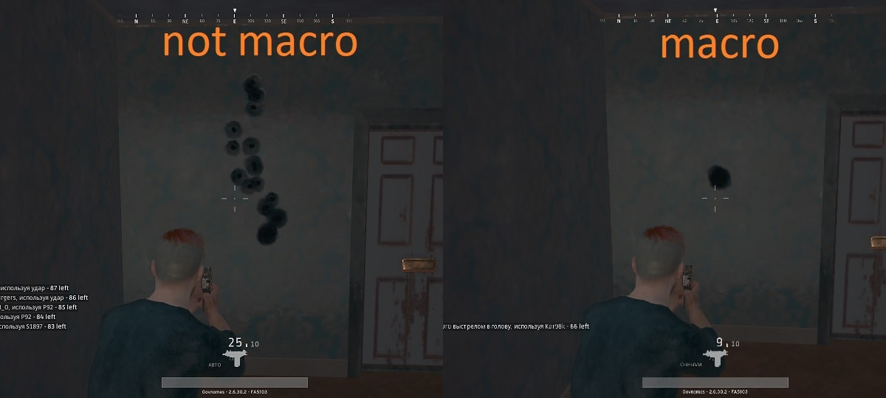
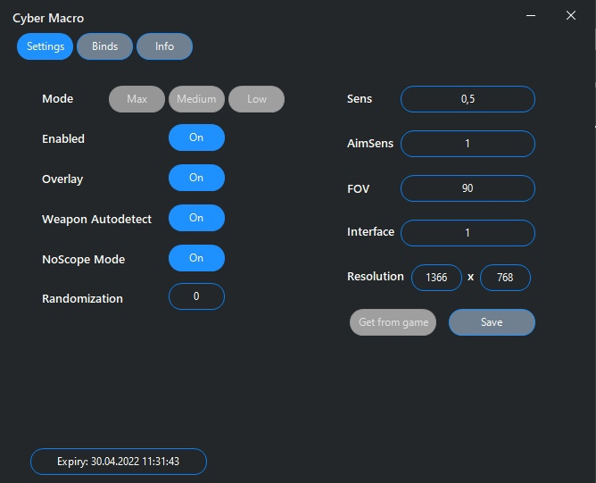

Cyber macro
макросы для Rust
макросы для всех видов оружия (настроим под любую мышь)
МАКРОСС УБИРАЮТ ОТДАЧУ У ЛЮБОГО ОРУЖИЯ, ВСЕ ПУЛИ ЛОЖАТЬСЯ В ОДНУ ТОЧКУ. ЭТО АБСОЛЮТНО БЕЗОПАСНАЯ СИСТЕМА, ПРОВЕРЕНА ВРЕМЕНЕМ В БЕЗЧИСЛЕННОМ КОЛИЧЕСТВЕ ИГР, БАН НЕ ВОЗМОЖЕН.
Cuber macro 2021.
СКРИНШОТЫ
X


НАСТРОЙКИ
X
1 Чувствительность мыши: любое!
2 Поле зрения: любое!
3 Чувствительность: любая!
3 Чувствительность в прицеле: любая!
3 Интерфейс: любой!
(В нашей программе вы можете устанавливать любые настройки.)
PS: Ваши настройки DPI не влияют на качество макроса.